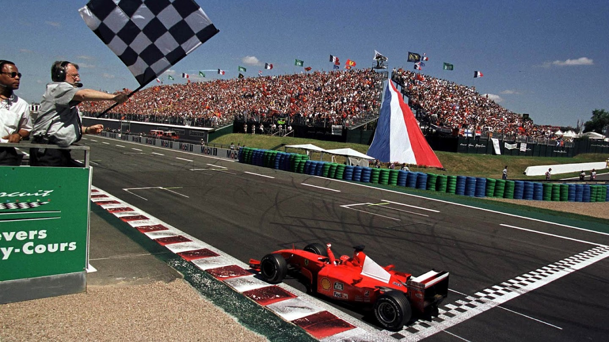
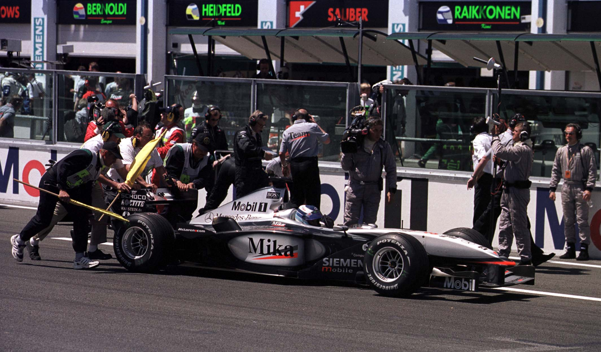
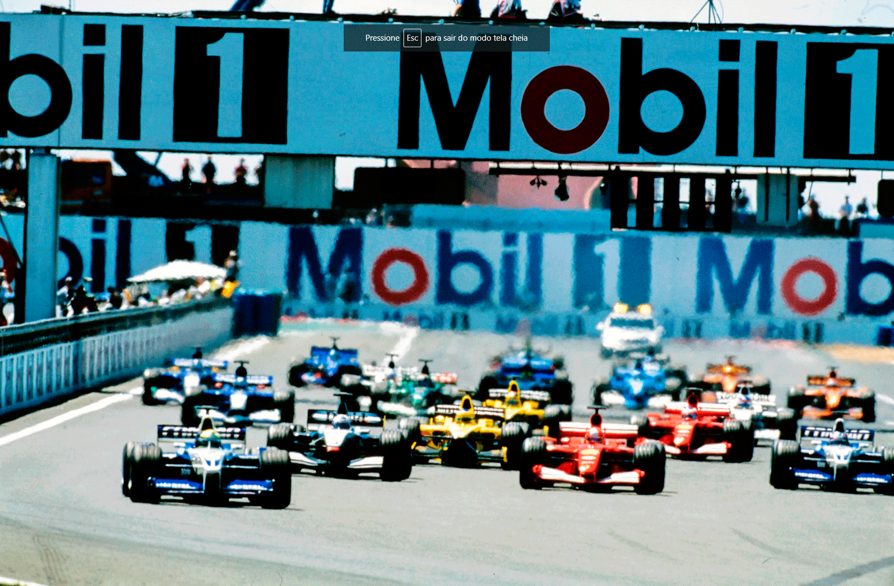
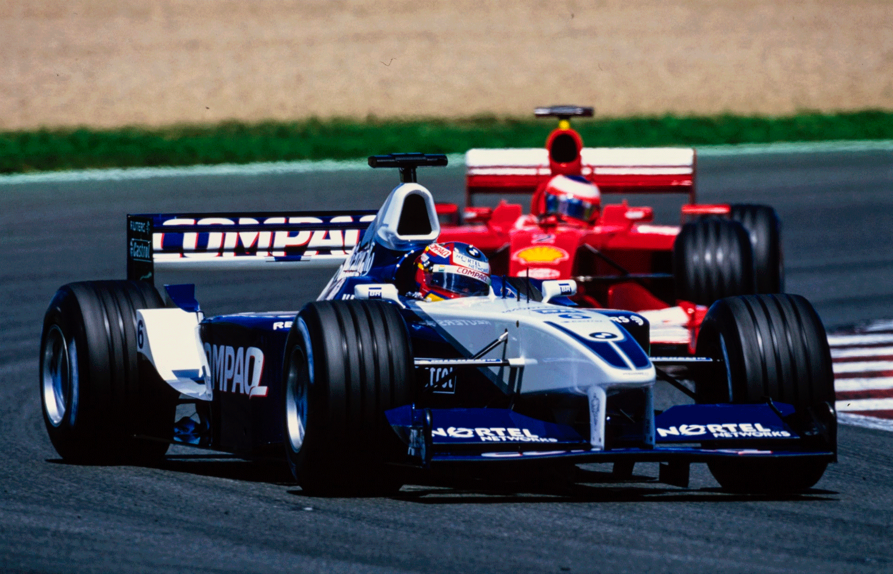
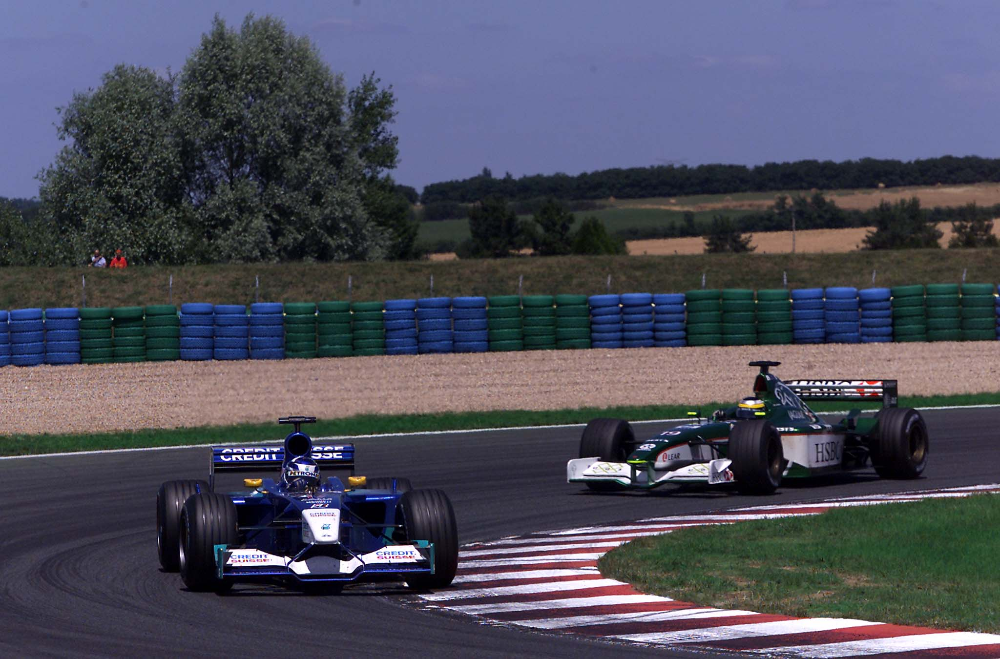
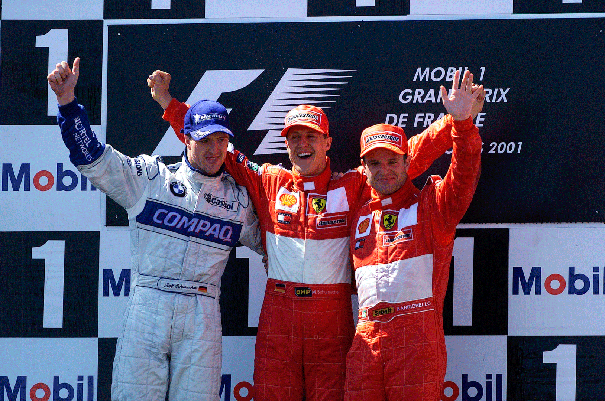

50 VEZES SCHUMACHER

Michael Schumacher vence pela 50ª vez na Formula 1 e faz a testa no GP da França
POR VENÍCIO ZAMBELI
O Grande Prêmio da França de Fórmula 1, disputado em Magny Cours, foi palco de mais uma vitória do piloto alemão Michael Schumacher. Quase dez anos depois de estrear na categoria, Schumacher alcançou a marca de 50 grandes prêmios chegando em 1º lugar e ficou a duas conquistas do recorde absoluto da Fórmula 1, pois o atual pertence ao piloto Alain Prost, com 51 vitórias. Quando muitos pensavam que a ameaça do irmão Ralf Schumacher poderia acabar com a tranquilidade do piloto número 1 da Ferrari, Michael Schumacher conseguiu superá-lo com eficiência na pista — e também com a boa estratégia de pit stop feita pela equipe italiana. Ralf marcou a primeira pole position de sua carreira na França, com o tempo de 1m12s989 (0s010 à frente de seu irmão). Foi a primeira pole position também da volta da BMW e da Michelin à Fórmula 1, e da Williams desde o Grande Prêmio da Europa de 1997, marcada na época pelo piloto canadense Jacques Villeneuve.

Antes mesmo da largada, o piloto da McLaren Mika Hakkinen, continuou sua agonia nesta temporada. Ele ocupava a 4ª posição no grid, mas um problema na caixa de câmbio impediu que ele saísse para a volta de apresentação — e também para a corrida. Quem acabou sendo beneficiado com isso foi o piloto brasileiro Rubens Barrichello, que não encontrou um bom acerto em sua Ferrari nos treinos classificatórios e largou apenas na 8ª posição, atrás das duas Jordan, duas McLaren, duas Williams e de seu companheiro de equipe.

Após apagadas as luzes vermelhas, Barrichello ganhou duas posições na pista (ultrapassou Jarno Trulli e Heinz-Harald Frentzen) e uma pela ausência de Hakkinen, indo para a 5a colocação. Mais na frente, Ralf conseguiu manter a dianteira, seguido de Schumacher, Coulthard e Juan Pablo Montoya. O piloto da Williams BMW conseguiu, na primeira parte da corrida, manter uma distância segura perante ao piloto da Ferrari. Com a previsão de duas paradas para troca de pneus e reabastecimento para quase todos os pilotos, a expectativa ficava para a estratégia de cada equipe. Barrichello foi um dos poucos que tinha planejado parar três vezes para tentar ganhar posições durante a prova com um carro mais leve — já que largara em má colocação. E foi na primeira parada que a corrida foi definida. Ralf teve um pequeno problema na troca de um de seus pneus traseiros e o tempo de seu pit stop acabou sendo um pouco maior do que o de Schumacher, que parou uma volta depois. Coulthard e Montoya — que não haviam parado — assumiram a 1ª e 2ª colocações, respectivamente. Schumacher vinha em 3º e Ralf em 4º. Com as paradas dos dois primeiros, a corrida tomou sua cara: os irmãos alemães na frente, seguidos por Barrichello. Montoya vinha em 4º. Coulthard continuou com os erros da McLaren e teve de pagar uma penalização de stop and go (10 segundos parado no pit) porque ultrapassou a velocidade limite permitida na área dos boxes quando foi fazer sua primeira parada. Mesmo assim, ele retornou em 5º lugar. Atrás dele, o “segundo pelotão” vinha fazendo uma corrida à parte, com as duas Jordan disputando posições com as duas Sauber.

Schumacher conseguiu então abrir vantagem para Ralf, que enfrentava problemas de freios e também com o seu segundo jogo de pneus. Chegada a hora do segundo pit stop, Ralf e Schumacher param sem alterarem suas posições. Montoya voltou a liderar por pouco tempo, até também precisar parar. O colombiano conseguiu voltar à frente de Ralf e dava a impressão de poder ser o novo 2º colocado da prova, até que seu motor BMW começou a falhar e apagou, restando vinte voltas para o final. Quem também estava à frente de Ralf era Barrichello, mas o piloto número 2 da Ferrari ainda tinha que fazer mais uma parada. E assim fez, retornando ainda na 3â posição. Coulthard, que era o 4S, começou uma perseguição ao brasileiro. A disputa durou até as voltas finais, mas Barrichello soube segurar o ímpeto do concorrente escocês, que está se caracterizando como um verdadeiro combatente nesta temporada, realizando corridas de recuperação em vários grandes prêmios. Na bandeirada, Schumacher chegou primeiro somando mais dez pontos no campeonato, chegando a 78 pontos (ficou, assim, com 31 pontos de vantagem sobre Coulthard, o 2º na tabela geral). Ralf foi o 2S na prova. Também na zona de pontos chegaram Trulli (5º) e Nick Heidfeld (6º).

BRASILEIROS — Fora Barrichello, os outros três brasileiros não foram bem. Enrique Bernoldi teve seu motor apagado ainda no início da corrida. Luciano Burti e Tarso Marques terminaram, mas apenas em 10s e 159 lugares, respectivamente. Mas a maior decepção ficou por conta dos franceses na categoria. O piloto Olivier Panis foi 9º e Jean Alesi o 12º. A equipe Prost teve seu melhor resultado com Burti e os novos motores Renault, da Benetton, não passaram de promessa: um quebrou (carro de Jenson Button) e o outro (Giancarlo Fisichella) foi apenas o 11Q colocado na corrida da França.
